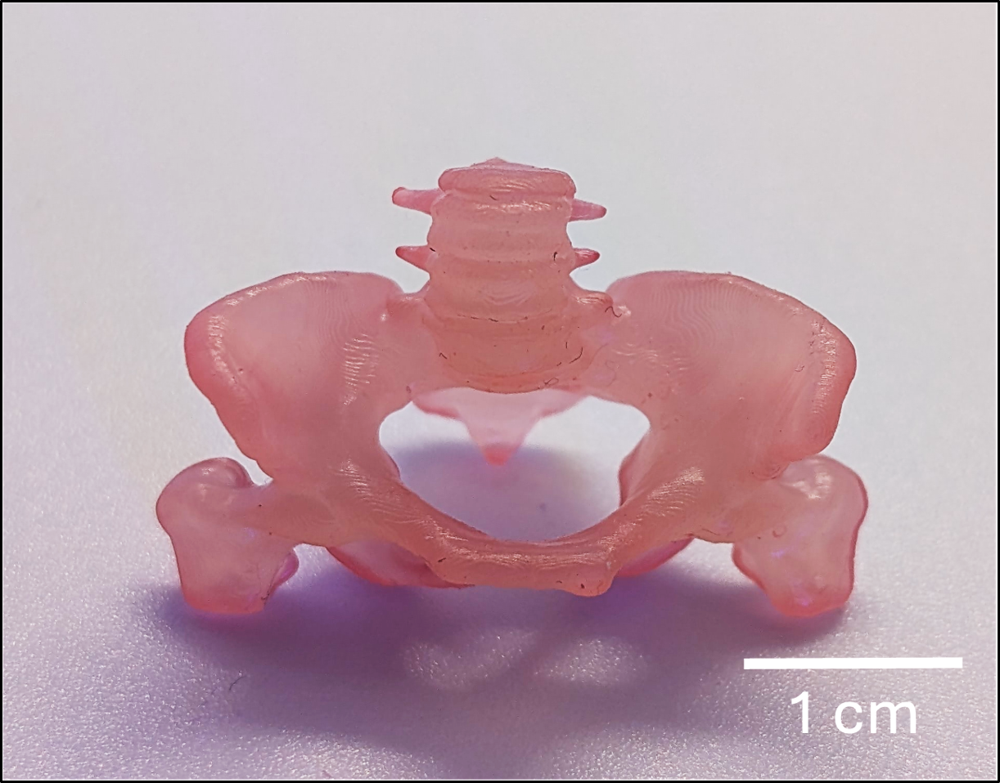
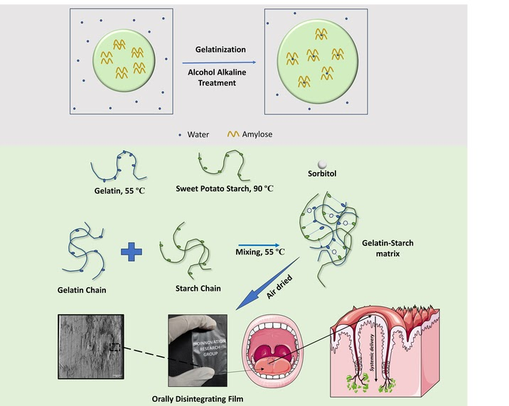
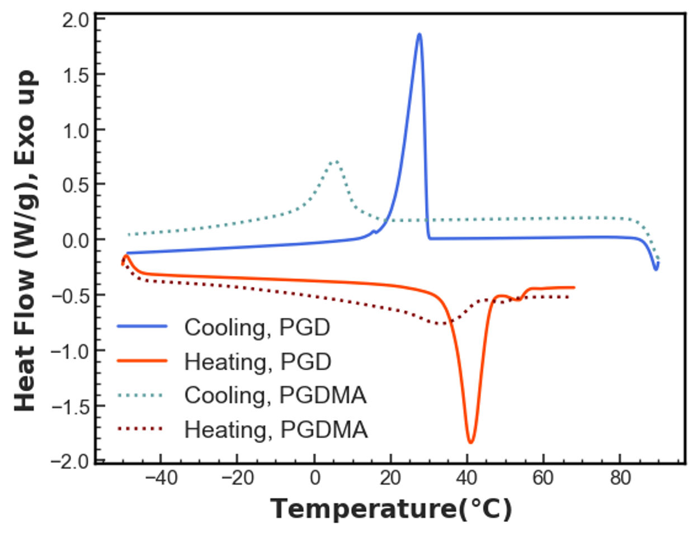
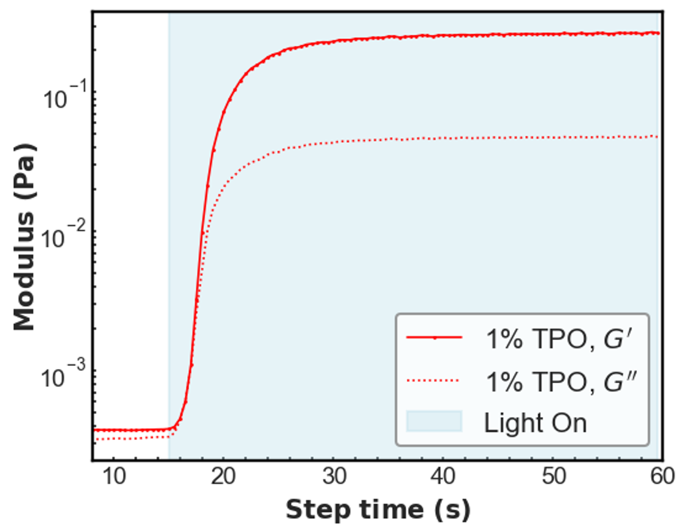
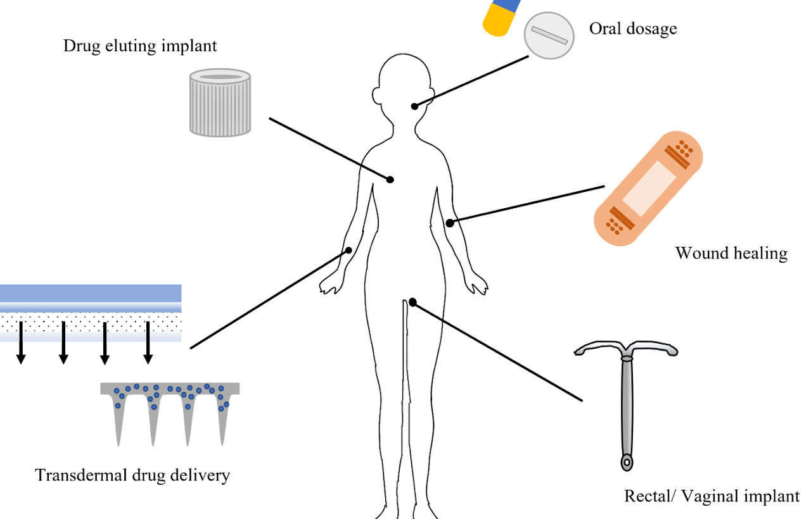
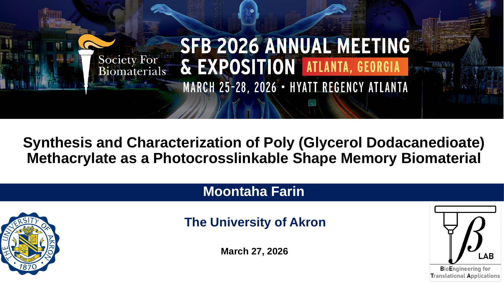
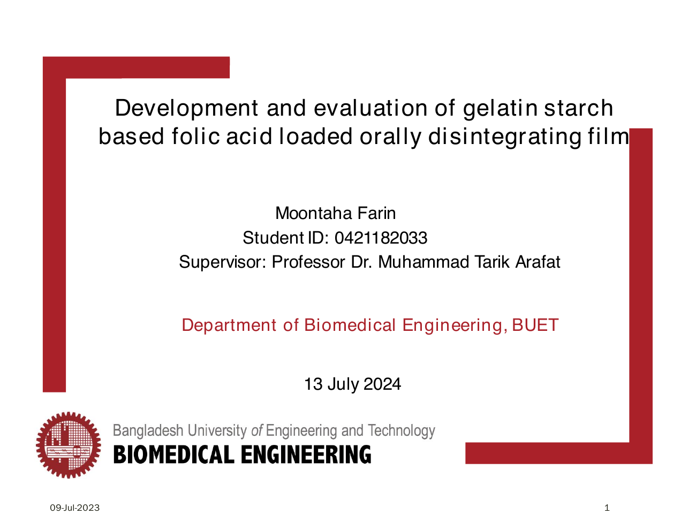

Shape-Memory Polymers
Photocrosslinkable PGD Methacrylate
Synthesis and characterization of a biocompatible, photocrosslinkable shape-memory resin for intricate patient-specific constructs.
View research evidence ↓Biomedical Engineer · Polymer & Biomaterials Researcher
My research experience spans soft polymers, polymer synthesis, biomaterials, drug delivery, DLP 3D printing, and materials characterization.
I am interested in understanding structure–property relationships in functional polymeric materials and developing advanced materials for biomedical and translational applications.
Research Interests
Selected work
.

Shape-Memory Polymers
Synthesis and characterization of a biocompatible, photocrosslinkable shape-memory resin for intricate patient-specific constructs.
View research evidence ↓
Polymeric Drug Delivery
Patient-convenient orally disintegrating films with tunable mechanical, thermal, morphological, and release properties.
View thesis presentation ↗Evidence, not just keywords
I connect chemical composition, processing behavior, thermal response, mechanical performance, and morphology to understand structure–property relationships.
NMR · FTIR · GPC
DSC
DMA · Tensile Testing
XRD · SEM
UV–Vis · Photorrheology


Polymeric systems
My earlier work connects polymer modification and formulation with patient-centered drug delivery. This foundation now complements my work in functional biomaterials and additive manufacturing.

Research output
Peer-reviewed publication, conference communication, and competitive recognition.
Moontaha Farin, et al. · Rapid Prototyping Journal
A review of additive-manufacturing technologies, materials, and design choices for personalized drug-delivery systems.

Oral Presentation · 27 March 2026
SFB 2026 Annual Meeting & Exposition, Atlanta, Georgia. Presented through the University of Akron.
View Presentation ↗
MSc Thesis Presentation · 13 July 2024
Department of Biomedical Engineering, Bangladesh University of Engineering and Technology (BUET). Supervised by Professor Dr. Muhammad Tarik Arafat.
View Presentation ↗Poster Presentation
Presented research in biomaterials and tissue-engineering applications.
Award
Competitive travel support for participation in TERMIS–AM.
Curriculum Vitae
A downloadable CV will be added when the current PDF is supplied. Until then, request the latest version directly by email.
Request Current CVAbout
My path from chemical engineering to biomedical engineering has shaped how I approach research: through polymer chemistry, processing, characterization, and application together.
Completed
Master of Science in Biomedical Engineering University of Akron · Akron, OhioResearch Project: Synthesis and Characterization of a Photocrosslinkable Shape-Memory Polymer for Biomedical Applications
My graduate research focused on the synthesis, DLP 3D printing, and characterization of photocrosslinkable shape-memory polymers for biomedical applications. The work involved chemical, thermal, mechanical, and biological characterization of polymeric materials.
Relevant Coursework: Advanced Polymer Engineering, 3D Bioprinting, Experimental Design, and Model-Based Systems Engineering.
Experience
BETA Lab · University of Akron
Bioinnovation Research Group · BUET
Department of Biomedical Engineering · BUET
BUET CPI Safety Research Group
Contact